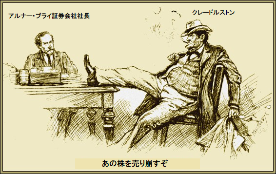
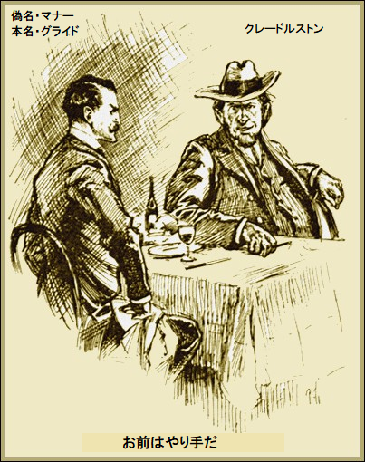
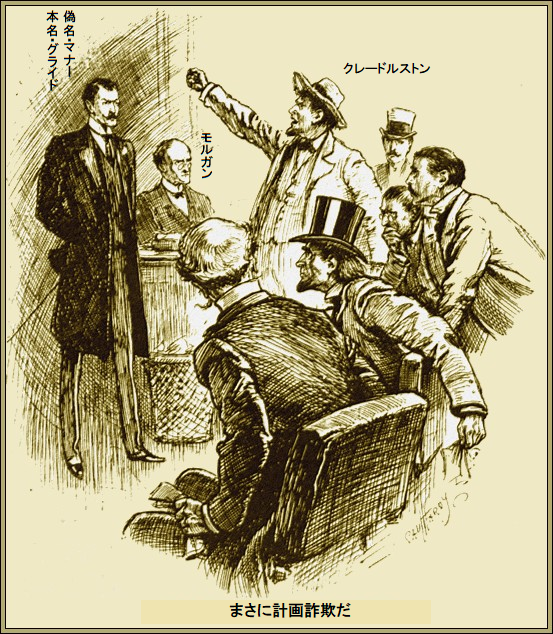
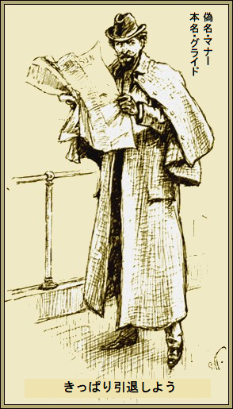

第一章
この数カ月、突如大宣伝をぶった新薬といえば、最新最強のクライソリン薬以外にない。効能書きは驚くべきものだ。心臓病から脳卒中まで何でも、この特効薬が一本あればころりと直り、値段はたった二十五セントと激安で、普通の人が普通の暮らしをしていれば買えるほど安いとか。
今までこれほど巧みな宣伝はない。ほらふき、つまり広告屋に、高額費用を払い、広大なアメリカで実に
全米の隅々から感謝礼状が続々届いた。クライソリン薬は、ねんざ、やけど、うちみのような怪我に間違いなくよく効く。売り上げは疑いない。たった半年で、所有者は巨大な事業を造り上げた。
そんな商売をしている限り、グライドはご満悦だ。クライソリン薬の調合を、はした金で買い取った本当の目的は、クレードルストン石油王の眼をそらし、隣地で盗掘するためだった。
あとは知っての通り、偶然の産物だ。クレードルストンから分捕った数百万ドルが自由に使えるから、なんでもできる。
だから、
持ち前の猪突猛進と馬力で、新事業に打って出た。並の男なら実績に安住したろうが、グライドはそうじゃない。狩猟本能がそうさせない。
その間、機が熟しつつあった。世の中で一番抜け目のない人種、つまりウォール街の株屋を喜ばせる頃合いだ。グライドが話したら石油王のクレードルストンはせせら笑った。両者は最近よく会っており、クレードルストンに敵意はないものの、この一番で自分の金を取り戻そうと堅く誓っていた。
だから数日後、サン新聞を読み、
クレードルストンが独り言。
「頭のいい奴はいつもやり過ぎて失敗する。奴は商売に専念すべきだ。三か月で身ぐるみはがしてやる。金を取り戻し、おまけにクライソリン社も手に入れてやる」
こうしてクレードルストンはクライソリン社の
のっけから特効薬は儲かっているようだ。六月は十万ドルの利益が出ている。経営者の予想によると、平均すれば初年度利益は百五十万ドルに達するとか。従って、二千万ドル公募は、もっともなように思われる。東のニューヨークから西のサンフランシスコまで、どの有名新聞にも広告を載せた。
一株十ドルで資本金を公募している。クレードルストンはサン新聞の宣伝費をすぐ調べた。どうやら宣伝費用を支払う
「奴にひと泡吹かせてやるぜ」
とクレードルストンがうそぶいた。
言うまでもなく、クライソリン狂騒は相当な注目を引いた。グライドは無駄に投資していない。宣伝費をふんだんに使い、大広告を打って、いまや全額を取り戻していた。
サン新聞とワールド新聞に予告すると、一週間で資本金はすべて応募済みになった。クレードルストンがにんまり。
本当のところ、グライドは金を稼いで
だからその間に、多くの優良銘柄がウォール街の株屋のせいで
グライドは破滅計画など何も知らない。うきうきと証券取引所に株価を問い合わせ、さも当然と言わんばかり。上場後二、三日間クライソリン株は暴騰し、値がつかなかった。この時を見計らってクレードルストンが動き始めた。
自分で売買することはしない。百万、二百万ドルは捨てる覚悟だ。リスクだよ。いやリスクなんてない。確実だ。
クレードルストンのお抱え株屋は業界の最大手。ここがひとたび売り買いすれば株価が大きく上下する。クレードルストンはこの
両足をテーブルに乗せ、口端に葉巻をくわえ、計画を
「あの株を売り
「ぜひ、私共がやりましょう」
とブライ社長が気取って言った。

クレードルストンが応じて、
「実際は俺だがね。いい
ブライ社長がうなずいた。相手の考えが分かり始めた。
「了解しました。会社を自分のものにしたいんでしょう」
「そうだ。乗っ取るということだ。うまくやってくれれば、それ相応のお礼をする。やり口はこうだ。俺の持ち株の三分の一を一〇％安く売ってくれ。それで大暴落を引き起こせば、小心者どもが怖がる。新聞にスキャンダル記事を流す。一旦落ち始めればみんな
「全くです。で、クレードルストンさんは？」
億万長者が葉巻の臭い煙を吐き、ウィンクして、
「買い出動だよ。底値になればマナーはそのころ意気消沈しているから、介入して安値で買い戻す。手口は何も目新しくないが、堅い。うまくいけば本物の金脈が手に入るぞ」
ブライ社長も全く同意見だ。密かに考えていたのは自分も
さらに説明するまでもないことだが、これで証券会社のブライ社長も
「みんな破産しますね」
とブライ社長。
「破産させろ。益々都合がいい。素人は買い時が分からないけど、我々は分かる。売り崩している間、じっと待って利用するのさ」
この話はやがてグライドの耳に入った。この種の情報には少しも金を惜しまない。盗み聞きした行員は事務所へ帰りしな、副業で得た金に大満足だ。
グライドに新情報が伝わったからじゃない。クレードルストンの手口はよく分かっていたし、やはり完全に予想通りだった。
やつの計画はすごいが、
「いつでも誰でも助けるぞ。クレードルストンが株を暴落させる片棒を
翌日、仕手戦が本格的に始まった。引け頃、クライソリン株は一〇ポイント下落。経済記者らは沈黙し、いぶかった。個人投資家が警戒し始めた。
翌朝クライソリン株は一気に暴落。四百万ドルもの株が売りに出て、
クレードルストンは成り行きを見守りながら満足した。自分の四百万ドル分が投げ売りされるのに、笑顔だ。
捨てた数百万ドル分は後日たっぷり肥大して戻り、
週末直前、クライソリン株の暴落が完結した。株は一〇セントに落ちるというクレードルストンの予言が文字通り実証された。怒った株主が新聞に投書して、多くの訴えを起こし、グライドは破産
だが、市場で投げ売りされると、すべて買い上げられた。小規模投機家はいつもそんな安値に目ざといから、売買は続いていた。大量のクライソリン株が出るたびに一〇回も買いあげた株屋は、この先二週間も底値で買い続けるはめになろう。
ようやくクレードルストンが満足して言った。
「何も言うことはない。二週間後の決済日が来る頃には仕手戦が終わり、言い値で買い集めるぞ。小口の株主は儲け話に喜んで売るだろう」
「一つ困ったことあります。持ち株以上を売ったのです。引き渡しを求められたらまずいです」
と証券会社のブライ社長。
クレードルストンが自信たっぷりに言った。
「そうならないぜ。数セント色をつけて渡せば結局満足する。ひと月以内にクライソリン株は全部俺のものになる。マナーにはいいお仕置きだ」
だがマナー、別名グライドはこの仕打ちに怒ってないようだった。さしあたり米国一大損した有名人だろう。
余りにも気の毒で言葉さえかけられなかった。インチキ会社を設立し、何百万ドルも手にしたあげく、株価に無頓着なために、出資金を横領したことになった。
ウォール街はマナーを追放し、詐欺会社を排除するために、州に手続きをした。クライソリン社長が起訴されるかどうか、興味の的になった。
しかしグライドは全てを笑って受け止めた。その日の午後、デルモニコスで昼食時、クレードルストンと親密に握手した。
「ところで、ウォール街はどうかね」
とクレードルストン。
「ウォール街に責任はないですよ。活気があるし、大事な仕事をしています。皆が一斉に動くのがいいですね。一人を破滅させるとなったら、実に効率的に動きますから」
クレードルストンが笑いをこらえた。ユーモアを理解できる余裕があった。
「クライソリンのことだろう。ウォール街に近づくなと言ったろう。まったくドジを踏んだな」
「ハハハ、あなたには大金が転がり込みますね。何が起こったか、誰のせいかよく知っていますよ」
「二回も勝つと思うな。はした金をやるから、あの油田のことを教えろ」
あの事業にペテンはないとグライドが否定したのは単なる話術、相手は信じっこないことを承知の上だ。
クレードルストンが笑った。
「ワハハ、わかったよ。お前はやり手だから、また立ち上がっても不思議じゃないが、クライソリンはもう駄目だ、倒産と思え」

グライドが立ちあがり、手袋のボタンをゆっくりはめながら、
「あなた、抜かりがあるでしょう。決済日が来たら安泰じゃないですよ。ペテン師はあなた一人じゃないでしょう。違いますか。いいでしょう、あとで取引しましょう。ではまた」
「待ってるぜ」
とクレードルストン。
グライドは何かモゴモゴ言い返し、部屋から出て行った。
第二章
クレードルストンがいつもの葉巻をくわえながら株屋のブライ社事務所にやってきた。決済日だ。経済のワーテルローに匹敵する。やはり、ブライ社長の顔はウェリントン将軍というよりナポレオンそのものだった。
クレードルストンがどっかと椅子に腰をおろして
「どうした」
「ちくしょう。手紙を受け取ったのですが、これを読んでください」
とブライ社長。
ブライ社長がテーブルに手紙を放り投げると、クレードルストンが読み上げた。
レキシントン通り
一八九八年七月十八日
拝啓
弊社は貴社との売買契約書を持っております。それによれば貴社は弊社の顧客にクライソリン株式を数十万株引き渡すとあります。ここに一覧を同封します。同表に日々の購入数と約価が書いてあります。当該日以内に株券の引き渡しを完了してくださいますようお願いします。
一八九八年七月十八日
拝啓
弊社は貴社との売買契約書を持っております。それによれば貴社は弊社の顧客にクライソリン株式を数十万株引き渡すとあります。ここに一覧を同封します。同表に日々の購入数と約価が書いてあります。当該日以内に株券の引き渡しを完了してくださいますようお願いします。
敬具
モルガン証券
クレードルストンが書類に眉をひそめた。全く心当たりがない。ようやく分った。
「どうやら誰か嗅ぎつけたようだな。ブツは結局渡さざるをえまい。さっそく手配しろ」
「でも同じ内容の手紙がもう三通あります。ご存知でしょう。あなたの持ち株は額面で売りましたから損失はありません。次にあなたの指示で数千株を数セントで売りました。この仕手戦には山を張っている者がおります。引き渡さねばなりません」
「それじゃ市場へ行って買ってこい。実際、八方手を尽くして株を買い始めろ。奴らが買った価格で満足させればいい。そのあとは我々の意のままだ。市場で、出し抜け」
「我々が動けばたちまち値上がりですよ」
「当然だ。その為に用意してある。俺の指し値で買う限り構わん。すぐウォール街へ出かけろ。後で立ち寄るから、昼食後二人だけで会おう」
クレードルストンが
「やけ酒か、同情するぜ」
とクレードルストン。
「私の話を聞けば、あなたにも同情しますよ。四時までにあなたと私とで、クライソリン株を百万株以上、引き渡す必要があります。実際は五分の一もありません。それにどんな値をつけても一株も手に入りません」
「一株も手に入らないだと。金の問題だろ」
「お金に関係ありません。我々のほかにも困ってる者がいます。売ったのに株券がない人です。市場で株屋全てに当たりましたが、誰ひとり一株も持っていません。
クレードルストンがうめいた。本当なら恐ろしい損失が待っている。つまり、数千株を一〇セントで売ったはいいが、現物がないので、ブツを手に入れるために三ドルで買って、それを十分の一以下の価格で引き渡さねばならない。
「いったい誰が持ってるんだ」
「奇怪ですよ、分かりません」
とブライ社長。
クレードルストンが黙った。一瞬たりともこんなことは予想だにしなかった。果たして、善意の株主が見つかるか。
結局駄目だった。次の決済日まで待ってもらうしかない。その間に、別な手が見つかり、裏ワザがひねり出せるかもしれない。
「もちろん延期せざるをえません」
とブライ社長。
「当然だ。その間にモルガン証券社長に会おう」
ついにブライ社長とクレードルストンは
言い分を全部聞いてから言った。
「持ち越しますか。私なら決済しますがね」
クレードルストンがいらついて毒づいた。
「ちきしょう、現ブツがないことを知ってるだろう」
「その通り。でも私は持ってますよ。高値でどうです」
「いくらだ」
「額面価格の一〇ドルなら欲しいだけ提供できます。あ、おっしゃりたいことは分かります。市価はたったの三ドルですが、あなた方に限っては一株、三百万ドルふっかけても良いでしょう、持ってないのですから。二週間後の今
やはりクレードルストンは次の決済日まで待ってもらうよう提案した。まだ仕手の裏をかく方法を探っていた。
負け
翌日、大口の株が八セントで売りに出た。とたんに全株をモルガン証券が落札した。共謀者どもは、こんな方法じゃ金をどぶに捨てるようなもんだと思うようになった。
こうしてクライソリン株は三ドルに貼りつき、次の決済日は大変なことになった。
大損した一同がモルガン証券の事務所に続々集まった。連中が言うにこと欠いて、全株を二ドル五十セントで決済しましょう、それで御社の顧客はきっと満足します、実際はたったの一〇セントで買ったのだから。
モルガン証券社長が答えて、
「皆さん申し訳ない。顧客に相談なく決められません。皆さんも会いたいでしょうから」
巧妙な手口に負けた犠牲者一同は一も二もなく賛成した。
数分後、グライド別名マナーが事務所に入って来るや、どよめいた。解決の望みすら断たれ、追い込まれた。
「皆さんが会いたいとか。何か御用でしょうか」
満場一致で、クレードルストンが代表して前に進み出て、言った。
「実はだな、待ってたんだ。我々が進退きわまったことは知ってるだろう」
「ええ、私が落ちるはずの立場に、皆さんは追い込まれましたね」
「全くそうだ。問題はだな、いくらで決済してくれるか」
「決済どころじゃないでしょう。市場へ投げ売りされた株は全部買いましたよ。あなたの仕手戦を見破るのに、長くはかからなかった。本気で買い向かった。
「ほとんど一〇セントだがね」
とクレードルストンがうめいた。
「益々けっこうですね。私は株券が欲しいだけですよ」
「しかし我々にはないんだよ」
とクレードルストンが泣きを入れた。
「知っています。とにかく法的には引き渡す義務があります。持ってないのを売ったことは、私には関係ありません。仕手戦で私を破滅させるのに失敗しましたね。お手数ですが株をお引き渡し願いませんか」
クレードルストンがわめいた。
「なんだと、どこで手に入れるんだ」
「私からですよ。大量に持ってますよ」
「もちろん、三ドルだな、マナーさん」
グライドがばっさり。
「足りませんね。私の立場としては、法的責任を果たすため、公募価格の一〇ドルですよ」
そのとき気まずい沈黙が流れた。グライド側から見れば、一株一〇ドルで売って、数分後に、はした金で戻る。それでは、眼の前の男はもちろん、大勢が破産する。
「まさに計画詐欺だ」
とクレードルストンがカッとなって叫んだ。

「好きに呼ぶがいいさ。私の権利ですから主張させてもらいます。事態を悟り、すぐ手を打ちました。私を破滅させる計画を察知して、騒ぎ立てる代わりに、聡明な紳士諸君に教訓を与えることにしました。持ってもない株をむちゃくちゃ売ってるのが分かった時、道が開けましたね。全株式を公募しましたが、用心して大部分を自分が持つようにしました。諸君が売ったら私がすべて買った。だから、たとえ一株百万ドルを請求しても、皆さんは応じるか、破産ですよ。その気になれば全員を破産に追い込めます。なんならウォール街に話を聞かせてもいいですよ。私はなにも悪くありませんし、分かるでしょ、今回、株はこっちのものですから」
この意味深な発言に反論はない。グライドはそこにいる全員を黙らせる立場にあった。全員協定を結ぶしかない。
やっとクレードルストンが口を開いた。
「キミの情けにすがるよ。許容できる安値にしてくれ」
「一株一〇ドルだ。びた一文負けない」
「次の決済日まで待ってくれないか、話し合うから」
「いいですよ。市場が一〇ドルに上がればそうなります」
代表者のクレードルストンはぷりぷり怒って出て行った。ウォール街は悲嘆に歯ぎしり、全ての涙はむなしかった。
再び騒動が勃発したのは代表者クレードルストンが時の支配者グライドにまた会いに来た時だ。
「一〇ドル払おう」
とクレードルストン。
グライドが澄まして言った。
「一五ドルです。市場は上がりました。こういう場合、差額も請求しますと警告しましたね。きのう投資家に売った値段がこの価格ですよ」
「冗談だろう」
とブライ社長が口ごもった。
グライドがきっぱり応えて、
「皆さん、私は決して冷血漢じゃありません。しかしこれはダイヤモンド同士の切り合いです。私の方が硬かった。また延長すれば二〇ドルに上がります。引き延ばす程に不利になりますよ」
クレードルストンがやけくそになって両手を万歳して言った。
「六百万ドルだ。六百万ドルをきれいに奪われた。もしあそこで知り合ったとき分かってたら、犬っころのように打ち殺していた。弾か友情か、お見舞いしたかった、どっちでも構わん……」
「大変感謝します。我が人生で最高のお礼を言わせてもらいますよ」
＊
暗黒月曜のなかでも最悪の月曜日が過ぎ去り、ウォール街をだしにした痛い新聞ネタが消えるか消えないうちに、やがてニューヨークは同じクライソリン株がらみの別な衝撃を受けた。
アメリカ大都市の火災は少なくないし、間断ないものの、過去しばらく経験しなかったのが、前記クライソリン社の広大な敷地で発生した大火事であった。
たちまち市民が大見出し六行と解説記事の二欄をむさぼり読んだのは、夕刊が発行されて最高潮に達した直後だった。
これがサン・夕刊紙の事件記事内容である。
『昨夜、大火事発生』
『新興億万長者、終焉』
『短くも華々しい経歴』
『偉大なるマナー氏』
『大火災に死す』
同氏は昨夜社内で就寝した。匿名手紙で建物を放火すると脅されたからだ。余談ながら保険は充分かけてあった。
同氏は手紙を笑い飛ばし、放火魔に抵抗。だが被害に遭ってしまった。この点に関して守衛も同意見だ。でも遺体は発見されてない。当該状況では発見されそうにない。
残念ながらマナー氏は昨夜焼失した建物におり、炎の中で死んだ。誰にも責任はないばかりか、警察発表も失火じゃない由。
その他のことは同氏の英国代理人が発表するまで不明。埋葬する遺体が無いためにウォール街は気の毒がるだろう。遺体があれば、株仲間が葬式に参列するだろうに。
『新興億万長者、終焉』
『短くも華々しい経歴』
『偉大なるマナー氏』
『大火災に死す』
同氏は昨夜社内で就寝した。匿名手紙で建物を放火すると脅されたからだ。余談ながら保険は充分かけてあった。
同氏は手紙を笑い飛ばし、放火魔に抵抗。だが被害に遭ってしまった。この点に関して守衛も同意見だ。でも遺体は発見されてない。当該状況では発見されそうにない。
残念ながらマナー氏は昨夜焼失した建物におり、炎の中で死んだ。誰にも責任はないばかりか、警察発表も失火じゃない由。
その他のことは同氏の英国代理人が発表するまで不明。埋葬する遺体が無いためにウォール街は気の毒がるだろう。遺体があれば、株仲間が葬式に参列するだろうに。
グライドは上記をカンパーニャ号の甲板で読み、
「まったく億万長者になるのは簡単だな、王道さえ通れば。人はいとも簡単に騙せるから俺の人生は

了